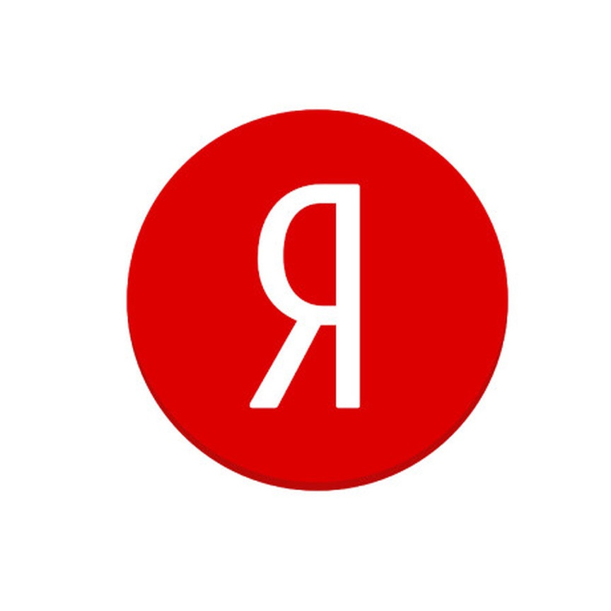

Яндекс
Компания Яндекс была создана 23 сентября 1997 года в Москве, Россия. Основателями компании являются Аркадий Волож, Илья Сегалович и Дмитрий Итскович. Яндекс начинал свою деятельность как поисковая система, но с течением времени развился в крупную IT-компанию, предлагающую самые разнообразные сервисы и продукты, начиная от поисковой системы и интернет-магазина до онлайн-кинотеатра и облачных технологий.
«Я́ндекс» — российская транснациональная компания в отрасли информационных технологий, чьё головное юридическое лицо зарегистрировано в Калининградской области Российской Федерации, владеющая одноимённой системой поиска в интернете, интернет-порталом и веб-службами в нескольких странах. В первые годы существования были созданы: поисковый алгоритм, давший также название одноименному поисковому порталу, рекламный движок, прочие сервисы типа почты, карт. В первой половине 2010-х компания начала путь к активному расширению и диверсификации бизнеса — можно сказать, что она вышла в офлайн — стала производить товары и начала заниматься цифровизацией традиционных офлайн-бизнесов. Сейчас у «Яндекса» не просто диверсифицированный бизнес. «Яндекс» — один из ведущих игроков, организовавших свою экосистему — большое количество разнообразных сервисов, пытающихся удовлетворить максимальное количество повседневных потребностей пользователя в одном месте. Экосистемность удобна самому «Яндексу» еще и потому, что новые экспериментальные сервисы могут использовать существующие наработки и сервисы как свою инфраструктуру, создавая синергию.